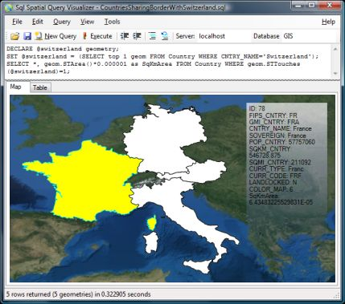
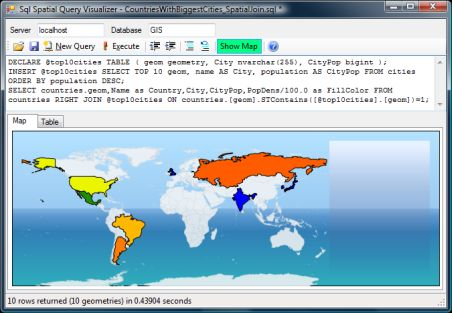
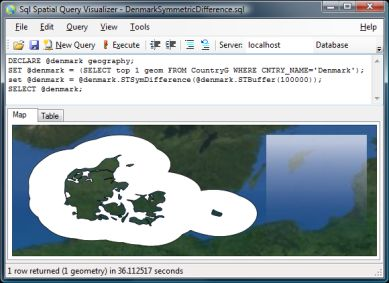
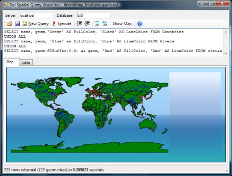

Control the output colors by creating FillColor and LineColor columns.
Examples:SELECT *, 'Green' AS FillColor, 'Transparent' as LineColor FROM countries -- Green fill, no outline SELECT *, '#FF49A9CC' AS FillColor FROM countries -- Hex-value based fill color, Default outline (Black)
If your color is integral, it will map the color to a rainbow-like scale using values from 0..16777216.
If you color is floating point, it will map the color to a rainbow-like scale using values from 0..1.
Values outside this range will be clipped.
If the color cannot be parsed it will use default colors (Black for outline, White for fill).
Control the thickness of lines/outlines by creating a LineThickness column. The value specifies the width in pixels.
Example:SELECT *, 'Blue' as LineColor, 3 as LineThickness FROM Rivers
Points are currently not supported for display, but you can use STBuffer() to make the points into buffer-polygons.
Examples:SELECT geom.STBuffer(1), * FROM cities SELECT geom.STBuffer(POPULATION), * FROM cities; -- Large city => large circle
If you use the geography type or a geometry type with an SRID between 4000 and 4999, lines will be shown as curves following a great circle. This doesn't mean that the lines are not straight - Just that projecting a sphere onto a flat screen distorts straight lines into curves (see more here). If they cross the dateline, they will also be cut in two (see below).
Note that this curvature is not applied to polygons, so you might see some discrepancies on large polygons with few vertices.

If you use a geometry type with an SRID between 4000 and 4999 (which is assumed to contain longitude/latitude coordinate pairs) or a Geography type, a rough world map is shown as background. You can disable this in View menu. You can also specify your own world map to use. The image has to be a map in the "Plate Carrée" projection containing the entire world. Width should be twice the size of the height.
You can get a good satellite image as background from here: http://visibleearth.nasa.gov/view_rec.php?id=7105 (I've had good success with the 5400x2700 JPEG image, but beware that larger images could cause problems).
This feature is very beta. Most datatypes are converted to strings and Z and M values are stripped.
Note that if you a mix of points, multipoints, lines and polygons in your resultset, up to four sets of shapefiles will be created.
Countries sharing border with Switzerland

Spatial join: Countries that contain the worlds 10 largest cities

Area within 100km of Denmark

Merging multiple queries to generate a combined map

Copyright (c) 2008 Morten Nielsen
Permission is hereby granted, free of charge, to any person obtaining a copy of this software and associated documentation files (the "Software"), to deal in the Software, including without limitation the rights to use, copy, publish, distribute and/or sublicense, copies of the Software, and to permit persons to whom the Software is furnished to do so, subject to the following conditions:
The above copyright notice and this permission notice shall be included in all copies of this Software or works derived from this Software.
The above copyright notice and this permission notice shall be included in all copies of this Software. You may not modify, de-compile, disassemble, reverse engineer or translate the software.
THE SOFTWARE IS PROVIDED "AS IS", WITHOUT WARRANTY OF ANY KIND, EXPRESS OR IMPLIED, INCLUDING BUT NOT LIMITED TO THE WARRANTIES OF MERCHANTABILITY, FITNESS FOR A PARTICULAR PURPOSE AND NONINFRINGEMENT. IN NO EVENT SHALL THE AUTHORS OR COPYRIGHT HOLDERS BE LIABLE FOR ANY CLAIM, DAMAGES OR OTHER LIABILITY, WHETHER IN AN ACTION OF CONTRACT, TORT OR OTHERWISE, ARISING FROM, OUT OF OR IN CONNECTION WITH THE SOFTWARE OR THE USE OR OTHER DEALINGS IN THE SOFTWARE.